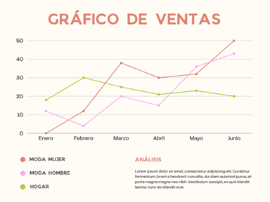
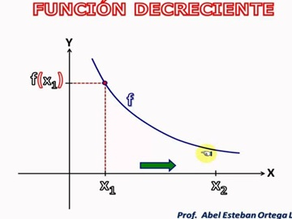
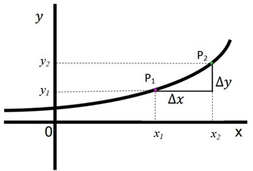
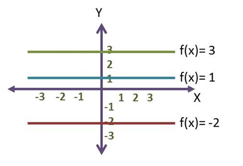
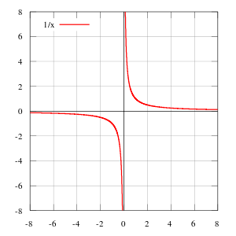
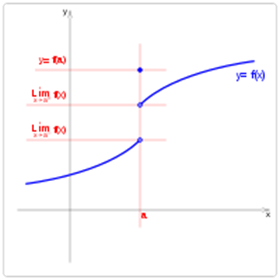
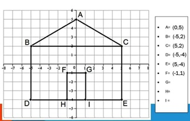
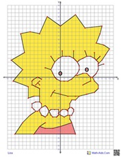

Una función matemática es la correspondencia o relación f de los elementos de un conjunto X con los elementos de un conjunto Y. Una función cumple con la condición de existencia (todos los elementos de X están relacionados con los elementos de Y) y con la condición de unicidad (cada elemento de X está relacionado con un único elemento de Y).
En términos de variables, una función es una correspondencia entre dos variables, de manera que a cada valor de la primera le corresponde un único valor de la segunda (o ninguno) que se le conoce como imagen.
A la función se le suele designar por f y a la imagen por f (x), siendo x la variable independiente.
La variable independiente es la que se fija previamente.
La variable dependiente es la que se deduce de la variable independiente.
Las funciones son como sistemas a las que se les introduce un elemento x y devuelven otro valor y, que también se designa por f (x).

Funcion Decreciente:
Diremos que es una funcion decreciente cuando a medida que el valor de la variable independiente aumenta el valor de la funcion disminuye.
Sean a y b dos elementos del dominio, tales que a b y formando el intervalo [a,b].
Una función es decreciente entre a y b si para cualquier par de puntos x1 y x2 del intervalo tales que x1,x2, se cumple que f(x1) > f(x2). Es decir, es decreciente en [a,b] si al aumentar la variable independiente x, disminuye la variable dependiente y.

Funcion Creciente:
Es un punto dado, si el valor de la primera derivada es positivo; y es decreciente si el valor de la misma primera derivada es negativo en ese punto.
ChatGPT
Una función creciente es aquella en la que los valores de la función aumentan a medida que aumenta el valor de la variable independiente. En otras palabras, si graficas una función creciente, verás que su gráfica va hacia arriba a medida que te desplazas hacia la derecha en el plano cartesiano. Por ejemplo, la función f(x) = 3x es creciente, ya que a medida que x aumenta, los valores de f(x) también aumentan.

Funcion Constante:
Es aquella que tiene la forma de y=f(x)=C, donde C es un numero real fijo. El dominio de una funcion constante es IR, su recorrido es un {C}. Su grafica es una recta paralela (O coincidente) al eje x.
Una función constante es aquella en la que los valores de la función no cambian independientemente del valor de la variable independiente. Esto significa que para todos los valores de la variable independiente, la función produce el mismo valor constante. Por ejemplo, la función f(x) = 5 es constante, ya que el valor de f(x) es siempre 5, independientemente del valor que tome x. En un gráfico, una función constante se representa como una línea horizontal.

Funcion Continua:
Se dice que una función es continua en un intervalo cuando es continua en todos los puntos del intervalo. La suma de dos funciones continuas en un punto es también una función continua en ese punto.
Una función f(x) es continua en el punto x_{0} cuando en este punto (a), un incremento infinitivamente pequeño de la variable independiente le corresponde igualmente un incremento infinitamente pequeño de la función.

Funcion Discontinua:
Una funcion es discontinua si tiene puntos en los cuales una pequena variacion de la variables independiente producen un salto en los valores de la variable dependiente
Cuando una función es discontinua interesa distinguir dos posibilidades:
Si no existe el \lim_{x \to a} f(x), se dice que la discontinuidad es esencial.
Si existe el \lim_{x \to a} f(x), se dice que la discontinuidad es evitable.
En este caso, se presentan dos posibilidades: que f(a) no exista o que f(a) \neq L
Para conseguir que una función con discontinuidad evitable sea continua, se altera en f(x) solamente su posible valor para x=a de manera que pase a ser f(a)=L, generalmente por métodos de factorización. Al hacer esto, se dice que se ha evitado la discontinuidad en a.

Plano Cartesiano:
En un plano cartesiano se pueden graficar las funciones. Son las rectas que se unen perpendicularmente, donde una es horizontal y la otra es vertical
El punto donde se cruzan estas rectas se llama "Origen".
La recta horizontal se le llama "Eje de las x".
Y del Origen a la derecha se le llama "Positivos".
Del Origen a la izquierda se les llama "Negativos".
La recta vertical se les llama "Eje de las y". Y tambien "Ordenadas".
El Origen de las y hacia arriba son "Positivas". El origen de las x hacia abajo son "Negativas"
Planos Cartesianos Ejemplos:


Una función constante es una función lineal por la cual el rango no cambia sin importar cual miembro del dominio es usado.
Funciones Racionales:
Una función racional está definida como el cociente de polinomios en los cuales el denominador tiene un grado de por lo menos
1. En otras palabras, debe haber una variable en el denominador.
Una función racional es una función que puede ser expresada como el cociente de dos polinomios, donde el denominador no es cero. Es decir, tiene la forma
𝑓
(
𝑥
)
=
𝑃
(
𝑥
)
𝑄
(
𝑥
)
f(x)=
Q(x)
P(x)
, donde
𝑃
(
𝑥
)
P(x) y
𝑄
(
𝑥
)
Q(x) son polinomios y
𝑄
(
𝑥
)
Q(x) no es igual a cero para ningún valor de
𝑥
x.
Por ejemplo,
𝑓
(
𝑥
)
=
2
𝑥
2
−
3
𝑥
+
1
𝑥
−
1
f(x)=
x−1
2x
2
−3x+1
es una función racional, mientras que
𝑔
(
𝑥
)
=
1
𝑥
g(x)=
x
1
también lo es. Sin embargo,
ℎ
(
𝑥
)
=
1
𝑥
2
−
1
h(x)=
x
2
−1
1
no es una función racional ya que el denominador se anula para
𝑥
=
1
x=1 y
𝑥
=
−
1
x=−1, lo que la hace no definida en esos puntos.
Funciones Irracionales:
Generalmente, la definición más usada es que una función irracional es una función que incluye variables en los radicales. Entonces, la forma fundamental de una función irracional es:
𝑔
(
𝑥
)
𝑛
n
g(x)
en donde
𝑔
(
𝑥
)
g(x) es una función racional.
Si es que el índice n del radical es impar, es posible calcular el dominio de todos los números reales.
Si es que el índice n del radical es par, necesitamos que
𝑔
(
𝑥
)
g(x) sea positivo o cero, ya que las raíces pares de un número negativo no son reales.